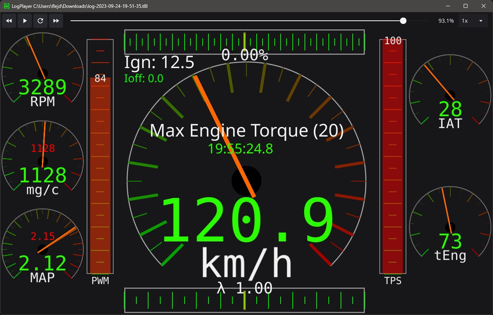

|
 |
 |
|
Made with
Logging without txlogger is like walking without legs😅- TrionicTuning forum member
Downloads
| * Windows 64bit | Installer | Standalone |
| *Requires Windows 10 or newer | ||
|
|
This software and goCAN has taken several hundreds of hours to develop
Consider donating if you 💕 it